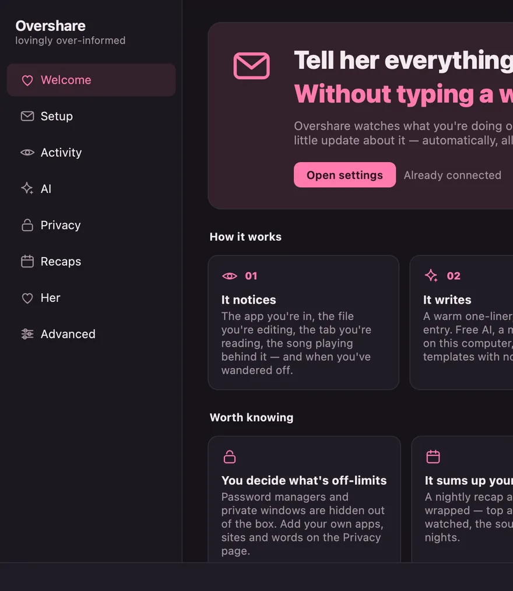
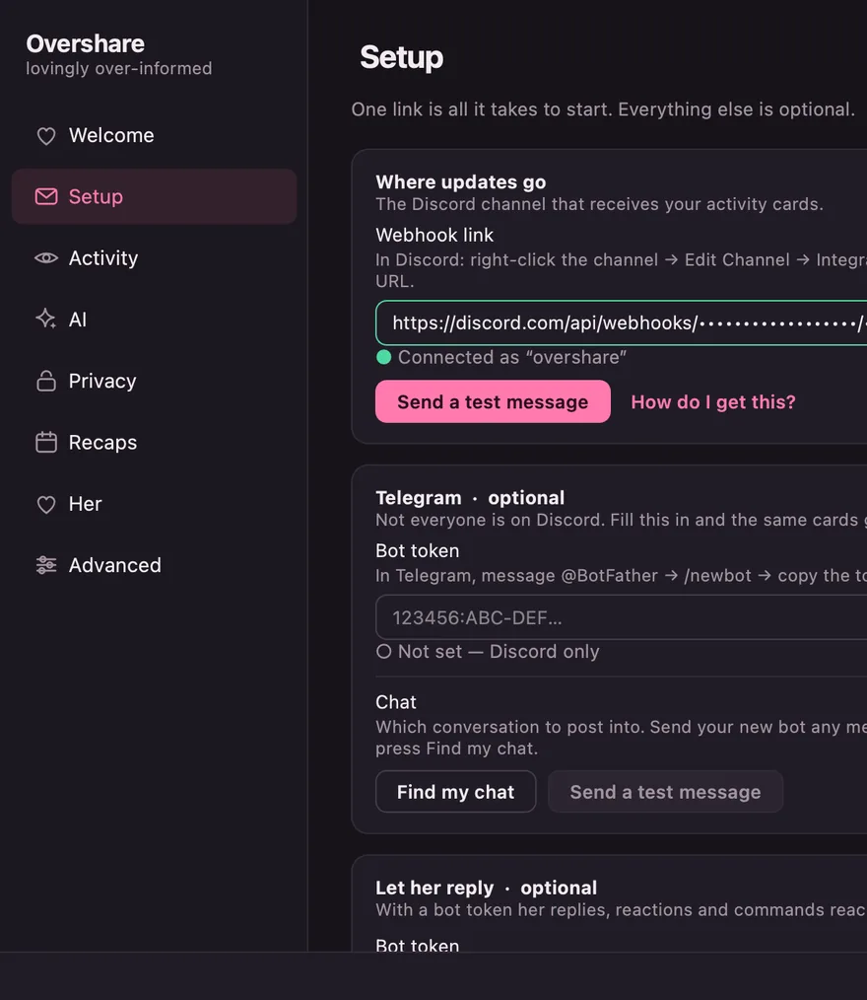
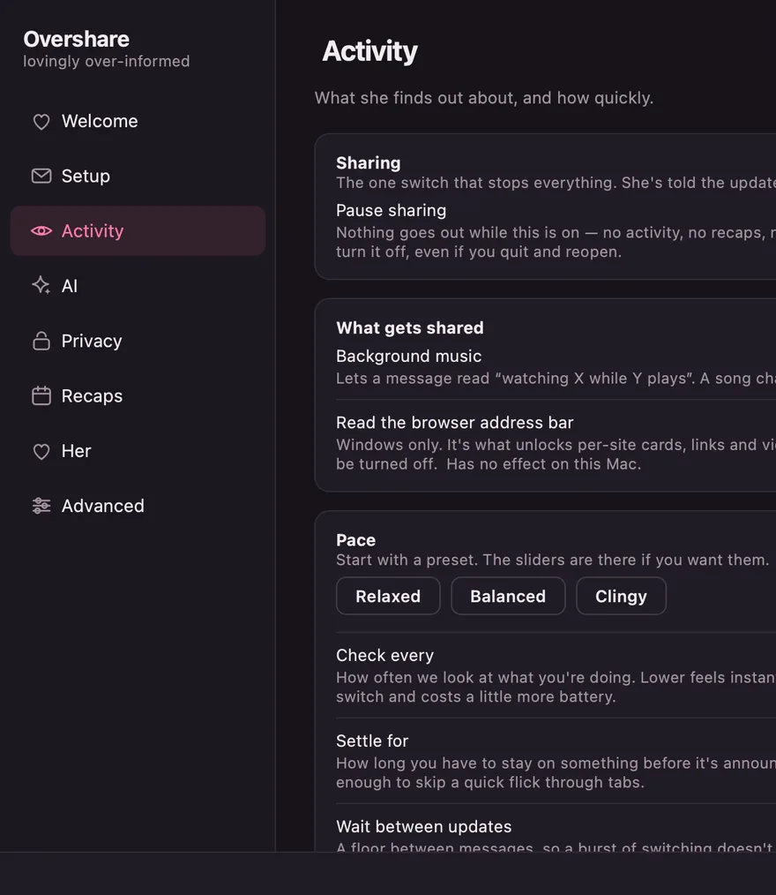
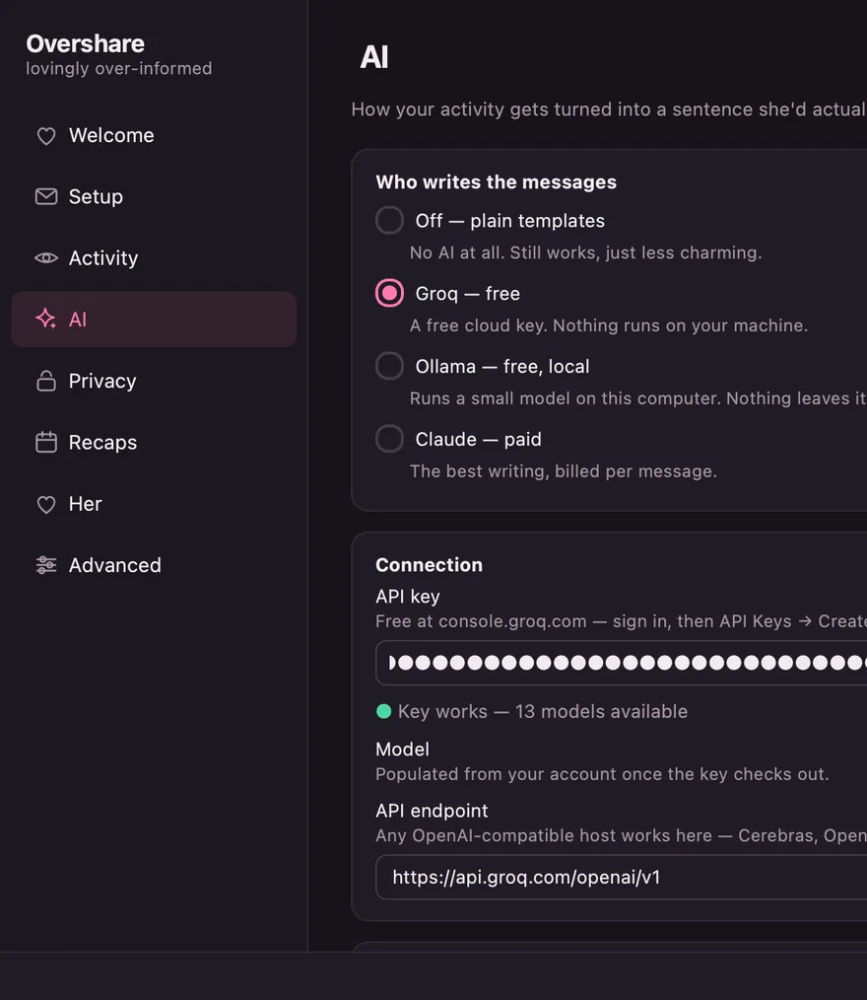
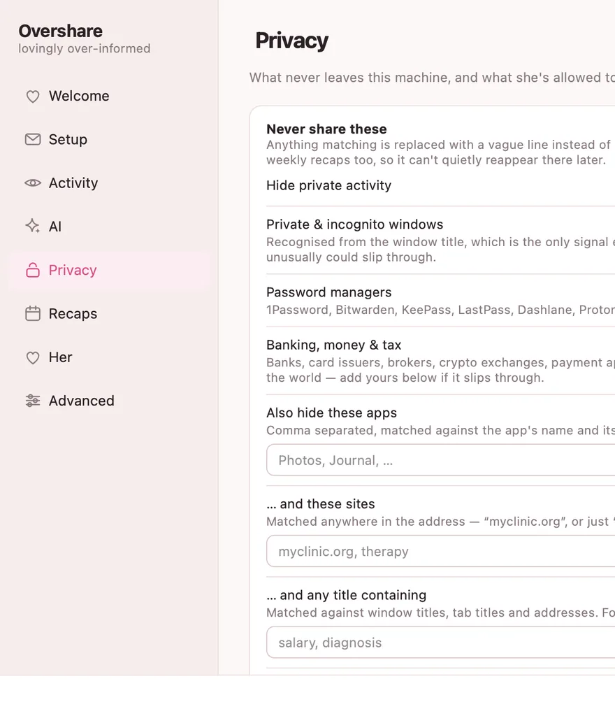
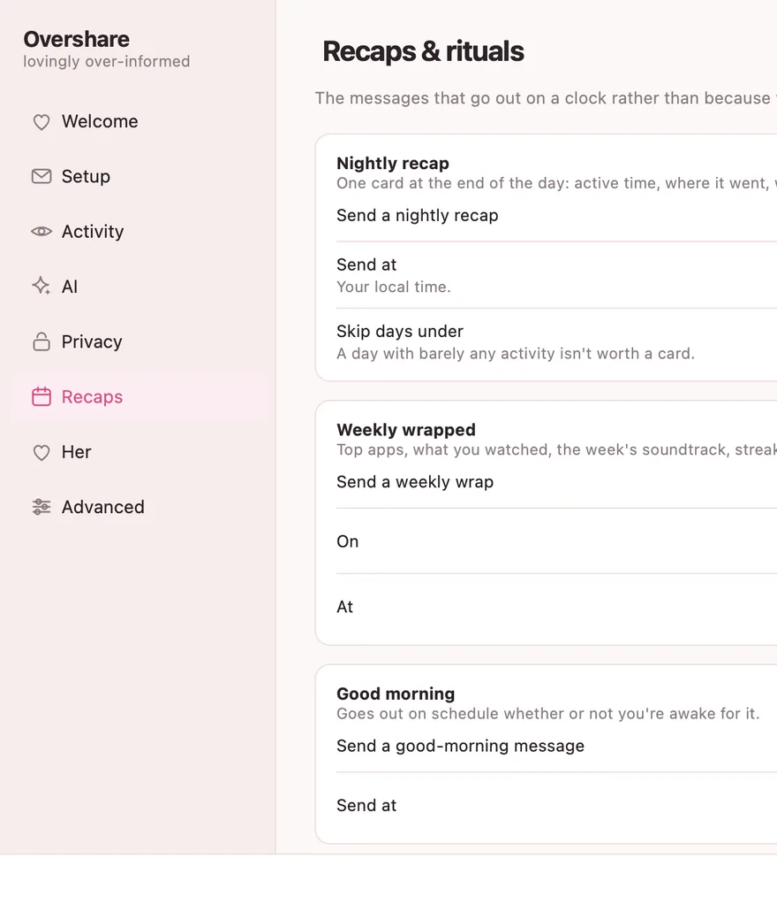
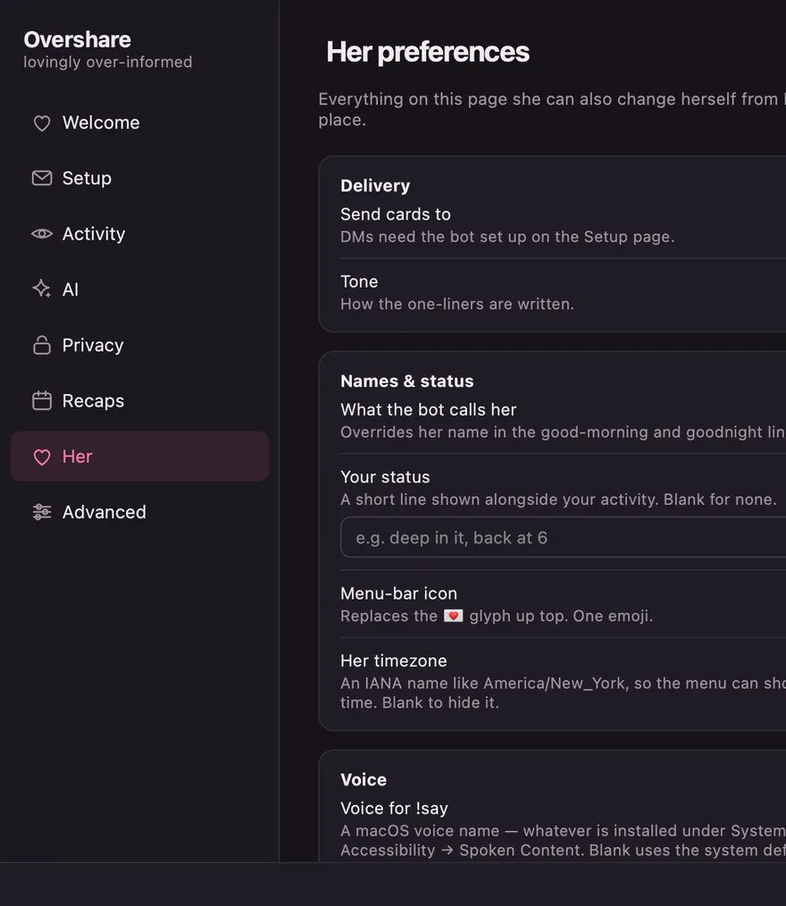
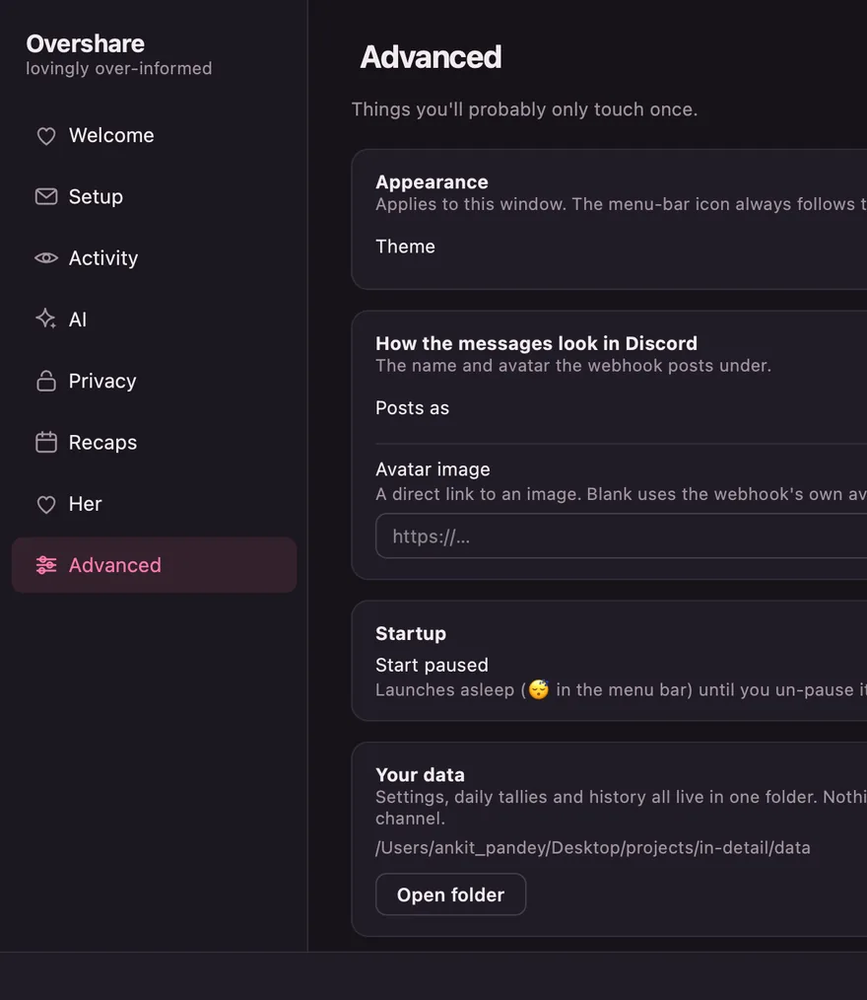
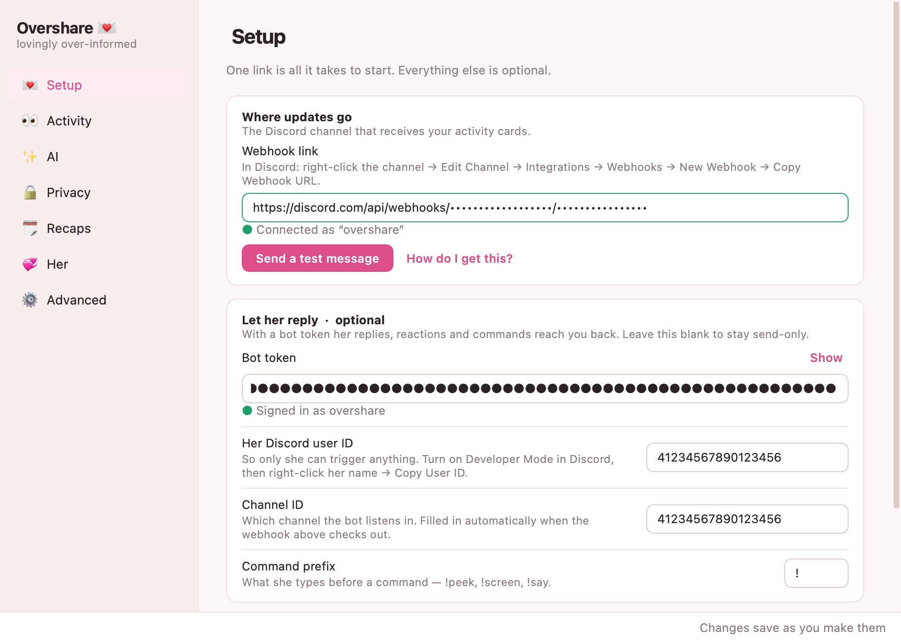
The app you're in, the file you're editing, the tab you're reading, the song playing behind it, the moment you wander off. It turns that into a sentence worth reading and sends it to a chat she already uses.
Discord or Telegram. Either, or both. She can reply, react, and ask for a photo — and you're told every time she looks.
It sends when something changes, and again on a heartbeat if it doesn't. Nothing to remember, nothing to type.
Where the day went, what you watched, the soundtrack, the late nights. If the machine was off when one was due, it sends when you're back.
Password managers and private windows are hidden before you configure anything. Hidden activity stays out of the recaps too.
A free cloud key, a model on your own machine, or no AI at all. Nothing here has a subscription.
Eight pages, and it checks its own work — verifying your webhook as you type, listing the AI models your key can actually reach.
Changes apply while it's running. Nothing needs restarting.
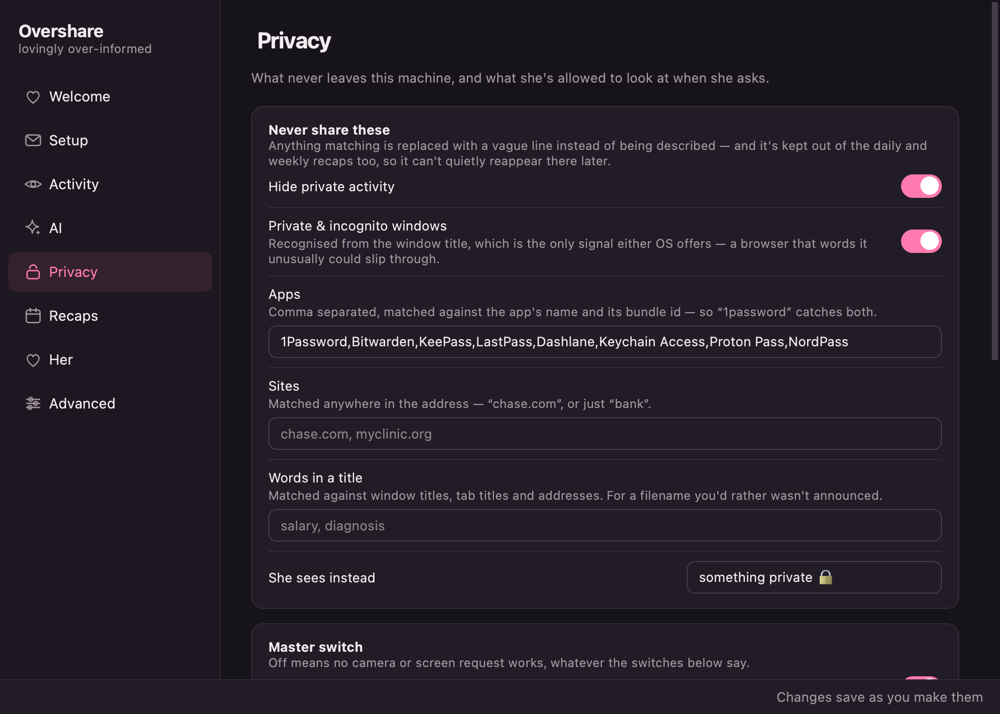
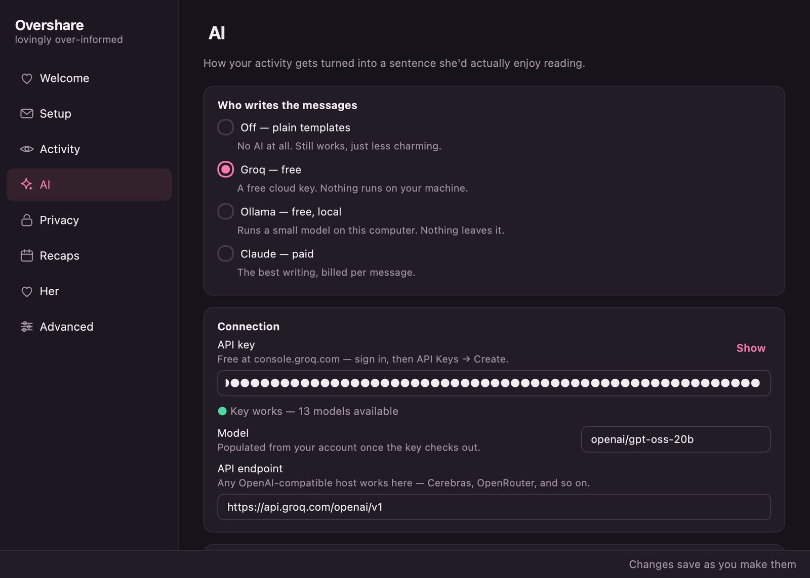
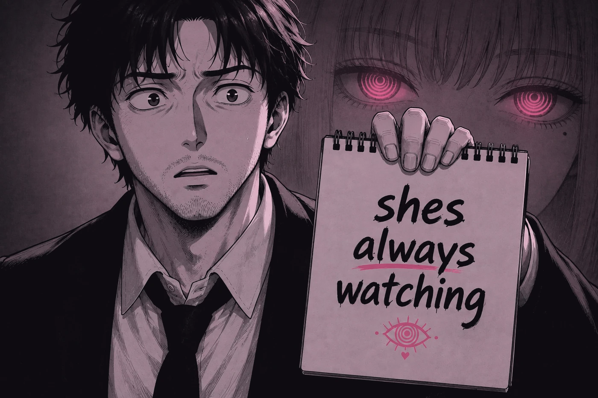
That's the entire product. You just installed it for her.
A meme, and only a meme — the art nods at Makima from Chainsaw Man. No affiliation with or endorsement by anyone who owns her, and nothing here is a suggestion about how to treat a real person.
Install it on your own machine before you send it to anyone. Pointed one way it stops being a bit and starts being surveillance — and it will feel like it, fast.
And get an actual yes. Not “fine”. Not because you asked twice. The pause button and the blocklist exist because yes has edges, and both of you get to move them whenever you like.
The joke only lands when you're both in it. If you'd hate having it on you, don't put it on them.
If someone had to be talked into it, that's a no. Uninstalling is one drag to the Trash, and nobody should need a reason.
One click stops everything, any time. They see that updates stopped, never what you were doing when they did.
Download it, paste one link, and it starts. Everything else — the AI, the recaps, the blocklist — is optional and already sensible.
Drag to Applications, or run the Windows installer. First launch needs right-click → Open on macOS, or More info → Run anyway on Windows — it isn't signed by a paid developer account.
In Discord: right-click a channel → Edit Channel → Integrations → Webhooks → Copy Webhook URL. Paste it into Setup.
It's already telling her.
No — just Discord or Telegram, which she almost certainly already has. Everything runs on your computer.
It is, if it only points one way and nobody properly agreed. Put it on your own machine too, ask properly, and never argue with the pause button — that's the whole difference between a bit and a problem. See the house rules.
It started because someone said “you never tell me anything”, and it's meant for two people who both find it funny. There's a pause button and a blocklist for the moments you don't.
Not by default. Password managers and private windows are hidden out of the box, and you can add any app, site or word to the blocklist. Hidden activity is kept out of the recaps too.
Because it isn't signed by a paid Apple developer account, which costs $99 a year. Right-click the app and choose Open once, and macOS remembers.
To the chat you chose, and nowhere else. There's no account and no server of ours in the middle — settings and history live in one folder on your machine. It's all open source if you'd rather read it than believe it.
Free, open source, and about two minutes from here.
Loading releases…